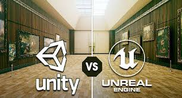

Bem-vindo ao Meu Blog de Tecnologia
Explore artigos sobre desenvolvimento de software, tendências de tecnologia e muito mais!
Como Iniciar no Desenvolvimento Web
Publicado em: 06 de Setembro de 2024, 09:00

O desenvolvimento web é uma das áreas mais promissoras da tecnologia. Se você está começando agora, este guia irá te ajudar a entender o básico e dar os primeiros passos...
Continue lendo
As Principais Tendências em Inteligência Artificial para 2024
Publicado em: 05 de Setembro de 2024, 15:30

A inteligência artificial está mudando o mundo, e novas tendências surgem a cada ano. Em 2024, algumas áreas específicas ganharão destaque, como aprendizado de máquina, robótica e IA ética...
Continue lendo
Unity vs Unreal: Qual é o Melhor para Desenvolvedores de Jogos?
Publicado em: 04 de Setembro de 2024, 10:45

Se você é um desenvolvedor de jogos, provavelmente já se perguntou qual motor de jogo é melhor: Unity ou Unreal? Ambos têm seus pontos fortes e fraquezas, e neste artigo exploramos as principais diferenças...
Continue lendo